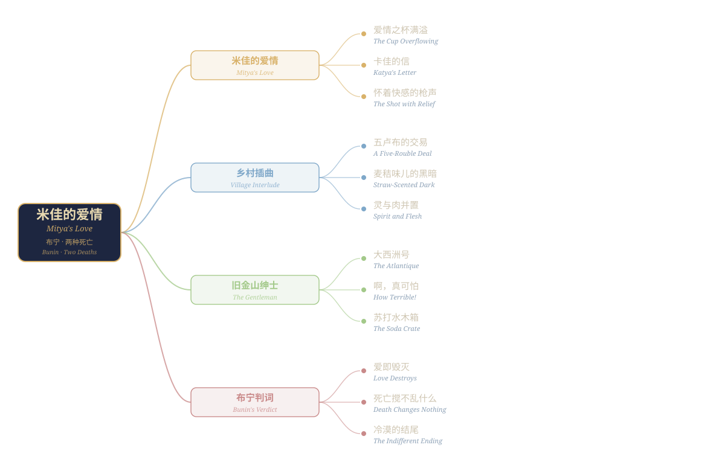

米佳的爱情
〇 · 书籍信息
基本信息
| 书名 | 《米佳的爱情》——人民文学出版社「蜂鸟文丛」布宁作品集，收录《米佳的爱情》（1924，二十九章）与《旧金山来的绅士》（1915）两篇代表作 |
|---|---|
| 作者 | 伊万·布宁（1870–1953），沃罗涅日破落贵族出身——受教于托尔斯泰、契诃夫，1909 年当选科学院名誉院士；1933 年获诺贝尔文学奖，俄罗斯首位诺奖作家 |
| 译者 | 陈馥——人民文学出版社资深俄语译者，译笔以洗练抒情著称，保留布宁「文字洗练、抒情性很强」的本色 |
| 体裁 | 失恋心理中篇（《米佳的爱情》）· 金钱文明判决书（《旧金山来的绅士》）——一篇写爱的焚身，一篇写物的陪葬 |
| 一句话 | 一个「怀着快感」扣下扳机的年轻人，与一个被装进苏打水木箱的富豪——布宁把两种现代死亡并排摆在我们面前 |
一 · 核心主题总览
两篇代表作之下，是四组互相咬合的母题：① 爱即毁灭（布宁的爱情判决）
米佳的爱从「他的爱情之杯已经满溢」走到「怀着快感用力按下扳机」，只用了九天。布宁写爱情从不写圆满——爱到极致的人，结局只有两种：毁掉自己，或者毁掉爱。
② 灵与肉（两种爱的并置）
卡佳的爱悬在空中（艺术、舞台、书信），阿莲卡的爱落在地上（五卢布、窝棚、麦秸味儿的黑暗）——布宁不评判高下，只并置真实：两种爱同样真实，也同样救不了米佳。
③ 金钱文明的死亡（绅士的清算）
《旧金山来的绅士》里富豪连名字都没有——「他的名字，既没有在拿波利，也没有在索莲托记入任何登记簿」的设定贯穿全篇：生前头等舱，死后装进苏打水木箱走底舱——布宁用同一条船完成了对整个阶级的宣判。
④ 世界的冷漠（死亡搅不乱什么）
绅士死后，路易吉照演「Ha sonato, signore?」，阿布鲁齐风笛手照唱颂歌，石匠照常上工——米佳死后世界同样照旧：布宁的「冷漠结尾」是他给现代小说上的一课——死亡搅不乱什么，这才是死亡最可怕的地方。
二 · 第一段 莫斯科 · 恋爱—— 春汛 · 妒忌 · 一封信 ——
春汛般的恋爱
小说开场不久便是全书最明亮的段落：他举目向上，「看见园子上面的天空亮得那么庄严而喜气洋洋，周围的果树开着亮丽的白花」，夜莺「以夜莺才有的忘我的激情清晰而有力地唱着」——「米佳返回的时候走得很慢，他的爱情之杯已经满溢」：布宁把恋爱的幸福感写成一种生理上的满溢，满到即将溢出为痛苦。
◆ 语言学习 · 俄语关键词 · 恋爱
| весеннее половодье / 春汛 | 恋爱幸福的总隐喻——河水涨满河床：布宁用自然现象给情感定量 |
|---|---|
| 夜莺 | 俄罗斯文学的传统歌手——「忘我的激情」：连鸟都在替他燃烧 |
妒忌的煎熬
戏剧学校校长把卡佳「夸得忘乎所以」，她忍不住转述；争吵时她嚷道：「如果你认为我处处都这么坏，我真不明白你为什么爱我！你到底要我怎么样？」而叙述者的诊断冷静得像病历：「米佳为什么爱卡佳，连他自己也不明白」「他对卡佳的怀疑和嫉妒也日甚一日」——爱得越深，猜疑越紧：布宁写恋爱的自耗，比写热恋更高明。
◆ 语言学习 · 心理 · 自耗
| 嫉妒（ревность） | 本书真正的第二主角——它吃掉的不只是信任，还有等待的耐心 |
|---|---|
| 夸奖 | 校长与导演的赞美是信心的腐蚀剂——卡佳的世界在向他敞开，也在离他而去 |
卡佳的信
决裂由一封信完成：「亲爱的米佳！您别记仇，把过去发生的一切都忘了吧！我鄙俗，我丑恶，我学坏了，我配不上您，但是我酷爱艺术！我决定了，这已是定局，我要走了，您知道我跟谁走……」米佳第一百零一遍重读这封信——「配不上您」与「酷爱艺术」在同一句话里打架：少女的任性与坦白，是全书最有人味的一页。
◆ 语言学习 · 叙事 · 书信
| 第一百零一遍 | 重读的计数——布宁用数字写偏执：数字比形容词更疼 |
|---|---|
| 酷爱艺术 | 卡佳的自我辩护词——也是她的判决书：艺术成了爱情的头号情敌 |
三 · 第二段 庄园 · 大地—— 融雪 · 泥泞 · 五卢布 ——
别了，莫斯科
失恋的米佳回乡下庄园，出租马车驶出小巷，「天色阴沉，稀稀拉拉地掉着雨点」——他在心里说：「别了，莫斯科！别了，在这里经历的一切！」俄罗斯大地开始以另一种节律接纳年轻人：融雪、椋鸟、炊烟、苹果花香——布宁的庄园描写是全书呼吸最匀畅的部分：大地不安慰人，但大地有节律，有节律就有喘息。
◆ 语言学习 · 地理 · 双节奏
| 庄园（усадьба） | 俄罗斯贵族的精神故乡——也是布宁流亡后反复回望的地方：乡愁是他的第二母题 |
|---|---|
| 泥泞（распутица） | 融雪季的乡间路——情感状态的直译：走在泥泞里，就是走在泥沼里 |
雨中失魂
母亲来信催他回莫斯科，退路也在关闭；米佳在雨中狂走——「他浑身湿透，脸上没有一点血色，两只眼睛哭红了，露出疯狂的神情，那样子真可怕。他一支接一支地吸烟，在泥泞的林荫小径上大步走着」。布宁写崩溃不用心理独白轰炸，用外貌白描：帽子耷拉、靴子糊泥、眼睛哭红——读者自己得出「这人完了」的结论。
◆ 语言学习 · 修辞 · 白描
| 那样子真可怕 | 叙述者唯一一次直接下判词——克制了一整章，只为这一句蓄力 |
|---|---|
| 一支接一支 | 吸烟的频率即心跳的频率：布宁的动作句永远比抒情句诚实 |
阿莲卡：五卢布的交易
庄头儿牵线，米佳在窝棚边「摸出一张皱皱巴巴的五卢布钞票，塞进阿莲卡的手心里」；她「回头看了一眼就钻进窝棚里那有麦秸味儿的黑暗中」，只低声说一句：「喂，快点儿还是怎么的。」这是全书最直白的场面，也是最诚实的：阿莲卡的泼辣与肉身的真实，反衬出卡佳爱情的缥缈——布宁不评判高下，只让两种爱并置。
◆ 语言学习 · 乡村 · 肉身
| 庄头儿 | 庄园经济的中人——他只管「办妥」：乡村把爱情办成了事务 |
|---|---|
| 麦秸味儿 | 嗅觉即真实——卡佳的书信没有气味，阿莲卡的窝棚有：布宁的感官等级制 |
四 · 第三段 尘世梦 · 枪声—— 最可怕的梦 · 怀着快感 ——
尘世梦与枪声
结局只有一段：他在漫长的雨夜后醒来，「刚刚做了一个一切尘世梦当中最可怕、最叫人恶心的梦。于是他摸索着拉开床头柜的抽屉，抓起一支冰凉而沉重的左轮手枪，深深地、高兴地叹了一口气，张大嘴巴，怀着快感用力按下扳机」。「深深地、高兴地」——死亡被写成解脱的圆满：九天的情感高压在这一声枪响里瞬间泄压，全书的结构到这一刻才显形——前面所有章节都是引信。
◆ 语言学习 · 结局 · 泄压
| 冰凉而沉重 | 手枪的触感即决心的触感——布宁给死亡一件具体的道具 |
|---|---|
| 怀着快感 | 全书最惊心的五个字——快感不属于杀戮，属于解脱：痛苦终于到头 |
爱与毁：布宁的爱情判决
米佳的死不是被爱情害死，是被「没有爱的世界」害死：卡佳的信断了灵的爱，五卢布的交易证明肉的爱也留不住——两头落空之后，生活本身失去引力。布宁的判决书写给所有热恋者：爱情不是生活的全部，但失去爱情的空仓期最危险——那不是悲伤，是失重。
◆ 语言学习 · 概念 · 失重
| 失重 | 失恋的物理学——不是往下坠，是失去了可以坠靠的地面 |
|---|---|
| 九天 | 小说的实际时间跨度——布宁用中篇的容量跑完了长篇的坠落曲线 |
两种死亡的并置
把米佳和《旧金山来的绅士》并排看：一个为爱自杀，「深深地、高兴地叹了一口气」；一个在卡普里对镜穿衣时猝死，临终只喃喃一句「啊，真可怕！」——前者死于激情的燃尽，后者死于体面的空转。布宁 1915 年先写了绅士，1924 年再写米佳：九年之间，他把死亡从「物的陪葬」改写成「爱的焚身」——但两次都不给读者怜悯的余地。
◆ 语言学习 · 结构 · 对照
| 真可怕 | 绅士对镜穿衣时对自己说的——他到死都没想明白可怕的是什么：讽刺的顶点 |
|---|---|
| （1924） | 《米佳的爱情》篇末的年份标记——两篇合刊即是布宁死亡书写的双联画 |
五 · 第四段 旧金山来的绅士—— 大西洲号 · 苏打水木箱 · 风笛手 ——
大西洲号：体面的一生
五十八岁的美国富豪携妻女赴欧游历两年，座驾是「有名的「大西洲号」客轮就像一座设备齐全的大饭店，有夜间酒吧、东方浴室、本船出版的报纸」。布宁故意不给他名字，只让他保持「先生」的身份——人物被抽掉名字，就成了一个阶级的标本；船上那一整套「极有规律」的生活，就是金钱文明的全部内容。
◆ 语言学习 · 英语关键词 · 船
| Atlantique / 大西洲号 | 以大西洋命名的邮轮——名字即航线：一群人活在大洋的 metaphor 上 |
|---|---|
| 先生 | 无名者的唯一称谓——布宁抽掉名字是第一刀，抽掉灵魂是第二刀 |
卡普里的死亡
绅士在卡普里旅馆穿衣对镜、系好领结之后，突然死去——「他喃喃地说：啊，真可怕！同时低下他那结实的秃头，既不打算弄明白，也没有去思索，究竟是什么可怕。」生前他从没想过死亡，死亡来临时他连害怕都来不及想完；旅馆老板连夜找棺材，「很遗憾，不能，绝对找不到」——大人物死了，第一件事是找木箱。
◆ 语言学习 · 讽刺 · 三层
| 真可怕 | 全书最著名的遗言——可怕的不是死亡，是他一生从未面对过死亡 |
|---|---|
| 找不到棺材 | 卡普里岛上没有现成的棺材——体面文明连死亡的后勤都没预备 |
苏打水木箱与风笛手
老板想起「他买进的英国苏打水是用既大又长的木箱包装的」——「这时候，一只装苏打水的长形木箱送进了四十三号房间」，运尸回美的船舱里，「这回他被装进涂满焦油的棺材里，深藏在黑暗的底舱，不得与活人见面了」。来时头等舱，归时底舱——同一条船完成了阶级的往返票；而结尾却是阿布鲁齐风笛手「在岛上行吟一个月之久」的欢快颂歌：世界对死亡毫无兴趣，这才是布宁最冷的一笔。
◆ 语言学习 · 意象 · 往返
| 苏打水木箱 | 全书最著名的道具——装汽水的箱子装了他：物对人的最终定价 |
|---|---|
| Ha sonato, signore? | 路易吉的口头禅「先生，响铃了吗？」——主人死了，台词照演：仪式的空转 |
六 · 人物图鉴与成长弧线—— 主角配角 · 一张表看穿 ——
主要人物
米佳——失恋的年轻人——从「爱情之杯满溢」到「怀着快感」扣扳机：九天走完一条坠落曲线
卡佳——艺术学校学生——「我配不上您，但是我酷爱艺术！」：任性、坦白、也是爱情的头号情敌的化身
旧金山来的绅士——五十八岁的无名富豪——生前头等舱、死后苏打水木箱：金钱文明的标本
阿莲卡——乡村姑娘——五卢布交易的另一方：肉身的真实，反衬卡佳的缥缈
次要人物（功能位）
| 庄头儿 | 庄园的中人——「有门儿！」：把爱情办成事务的经手人 |
|---|---|
| 路易吉 | 茶房——「Ha sonato, signore?」：主人死了台词照演的表演家 |
| 米佳的母亲 | 庄园的旧式主妇——来信催归：亲情是退路，也是压力 |
| 绅士的妻女 | 同行的家属——死亡降临后立即要求「体面处理」：哀悼也是程序 |
七 · 主题与象征—— 每个道具都在说话 ——
| 爱情之杯 | 满溢即起点——布宁的爱情计量学：满到溢出，痛苦就开始 |
|---|---|
| 泥泞 | 融雪季的乡间路——情感状态的直译：每一步都在下陷 |
| 左轮手枪 | 「冰凉而沉重」的解脱道具——死亡在布宁笔下从来不是悲剧场面，是一个动作 |
| 大西洲号 | 漂浮的大饭店——金钱文明的自足世界：四壁之外「海洋是可怖的」 |
| 苏打水木箱 | 绅士的最终容器——生前的一切头衔，折算成一只木箱的运费 |
| 风笛手 | 阿布鲁齐山民的颂歌——死亡搅不乱的世界的声音 |
八 · 写作手法赏析—— 怎么写，就能怎么学 ——
① 白描判词法
全章克制，只在关键处下一句直接判词（「那样子真可怕」）——一句判词的重量超过十行渲染。
② 九天结构
《米佳的爱情》以实际时间跨度跑完长篇的坠落曲线——前面所有章节都是引信，枪声是唯一的爆炸。
③ 道具叙事
五卢布钞票、苏打水木箱、涂焦油的棺材——布宁用物件完成阶级与爱情的定价，不用一句议论。
④ 冷漠结尾
路易吉照演台词、风笛手照唱颂歌——死亡之后世界照旧的收束法：把「无动于衷」写成最深的讽刺。
九 · 名段欣赏—— 原文精读 · 逐段赏析 ——
十 · 金句摘录—— 12 条 · 中英对照 · 带出处 ——
"天空亮得那么庄严而喜气洋洋"—— 第 2 章
"他的爱情之杯已经满溢。"—— 第 2 章
"米佳为什么爱卡佳，连他自己也不明白"—— 第 3 章
"如果你认为我处处都这么坏，我真不明白你为什么爱我！你到底要我怎么样？"—— 第 4 章 · 卡佳
"我鄙俗，我丑恶，我学坏了，我配不上您，但是我酷爱艺术！"—— 第 5 章 · 卡佳的信
"别了，莫斯科！别了，在这里经历的一切！"—— 第 6 章
"他浑身湿透，脸上没有一点血色，两只眼睛哭红了，露出疯狂的神情，那样子真可怕"—— 第 8 章
"喂，快点儿还是怎么的"—— 第 11 章 · 阿莲卡
"摸出一张皱皱巴巴的五卢布钞票，塞进阿莲卡的手心里"—— 第 11 章
"深深地、高兴地叹了一口气，张大嘴巴，怀着快感用力按下扳机"—— 第 29 章 · 结局
"啊，真可怕！"—— 《旧金山来的绅士》
"这回他被装进涂满焦油的棺材里，深藏在黑暗的底舱，不得与活人见面了"—— 《旧金山来的绅士》
十一 · 拓展阅读—— 原文 · 词条 · 译文 ——
原文与文本
- Ivan Bunin — Wikipedia —— 生平、1933 年诺奖与流亡写作的谱系
- Mitya's Love — Wikipedia —— 1924 年中篇的原文与创作背景
主题与延伸
- The Gentleman from San Francisco — Wikipedia —— 1915 年名篇——金钱文明判决书的完整文本研究
- Anton Chekhov — Wikipedia —— 布宁的文学师承——契诃夫与托尔斯泰的 Russia
十二 · 个人感悟与心得—— 三点心得 ——
春汛 · 泥泞 · 底舱
① 满溢即痛苦的前兆
「他的爱情之杯已经满溢」——布宁把幸福写成生理上的满，满到溢出就成了痛。恋爱最甜的那一刻，恰恰是失去的开始：杯子的容量是恒定的，人是会变的。
② 两种爱都救不了人
卡佳的灵之爱悬空，阿莲卡的肉之爱落地——米佳两头奔逃，两头落空。灵与肉不是选择题，是同一道题的两半：只答一半的人，迟早交白卷。
③ 生前头等舱，死后底舱
绅士的一生被折算成一只苏打水木箱的运费。布宁的冷眼适合每个 accumulation（积累）时代：你攒下的一切，最后由别人来定运费。
—— 布宁死于 1953 年 11 月 8 日，巴黎，流亡三十三年后。他到死没有回过俄罗斯——但他的庄园、春汛与夜莺，全都留在了俄语里。
十三 · 一页速查（复习用）
| 全书骨架 | 双联画：米佳的爱情（爱的焚身）＋ 旧金山来的绅士（物的陪葬） |
|---|---|
| 核心命题 | 爱即毁灭；灵与肉并置；生前头等舱死后底舱；死亡搅不乱什么 |
| 必读篇目 | 米佳的爱情（全文）→ 旧金山来的绅士（全文）——两篇合计不足三百页，可一个下午读完 |
| 三大符号 | 爱情之杯（满溢）· 泥泞（下陷）· 苏打水木箱（定价） |
| 一句话总结 | 布宁用两种死亡回答同一个问题：没有爱地活着，与没有果地爱着，哪一种更荒凉 |
十四 · 全书思维导图—— 一图纵览 ——

一图纵览全书骨架 · 中英双语对照 · 手机端可左右滑动查看全图